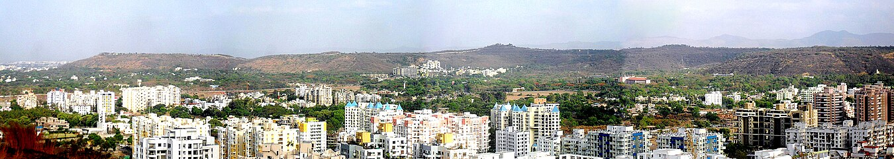

| Welcome To Pune City | |||||
|---|---|---|---|---|---|
| HOME | HISTORY | GEOGRAPHY | CULTURE | IT HUB | TOURIST PLACES |
|  | |||||
|
Geography
Pune is situated at approximately 18° 32" north latitude and 73° 51" east longitude. The city's total area is 15.642 km2,[76] and the municipal corporation area covers 518 km2.[77] By road Pune is 1,173 km (729 mi) south of Delhi, 734 km (456 mi) north of Bangalore, 562 km (349 mi) north-west of Hyderabad and 149 km (93 mi) south-east of Mumbai. Pune lies on the western margin of the Deccan plateau, at an altitude of 560 m (1,840 ft) above sea level. It is on the leeward side of the Sahyadri mountain range, which forms a barrier from the Arabian Sea. It is a hilly city, with Vetal Hill rising to 800 m (2,600 ft) above sea level. The Sinhagad fort is at an altitude of 1,300 metres (4,300 feet). The old city of Pune is at the confluence of the Mula and Mutha rivers. The Pavana, a tributary of Mula river and Indrayani river, a tributary of the Bhima river, traverse the northwest Neighbourhoods of Pune. Industrial Information
The modern city of Pune has many distinct neighbourhoods. These include the numerous peths of the old city on the eastern bank of the Mutha river, the cantonment areas of Khadki and Camp established by the British, and numerous suburbs.[59] There are several Peths in usual localities of the Pune city.[78] The industrial growth in the Pimpri, Chinchwad, Akurdi, Nigdi and nearby areas allowed these areas to incorporate a new governing municipal corporation.[60][79][80][81][82][83][84] The Pune Metropolitan Region (PMR), initially defined in 1967, has grown to 7,256 km2 made up of the ten talukas of the Pune district.[85] The areas of PMC and PCMC along with the three cantonment areas of Camp, Khadki, and Dehu Road form the urban core of the PMR, which also includes seven municipal councils and 842 villages. |
|||||
|
See Also
|
Pune Map |
||||